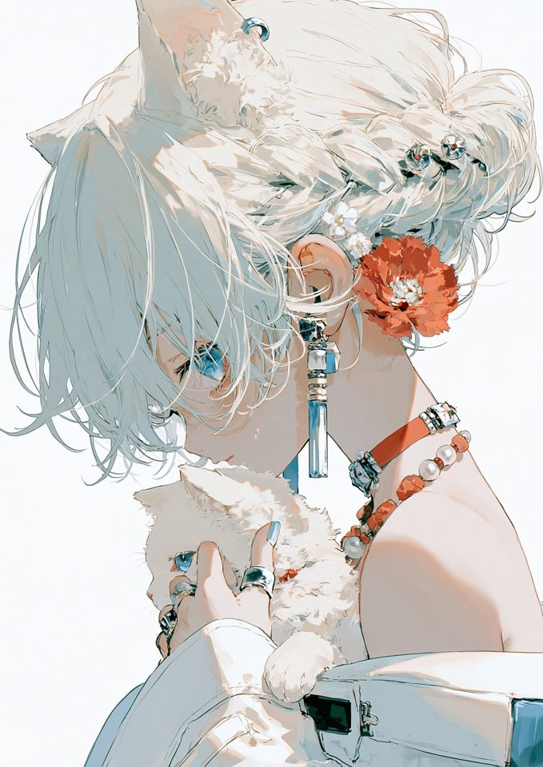
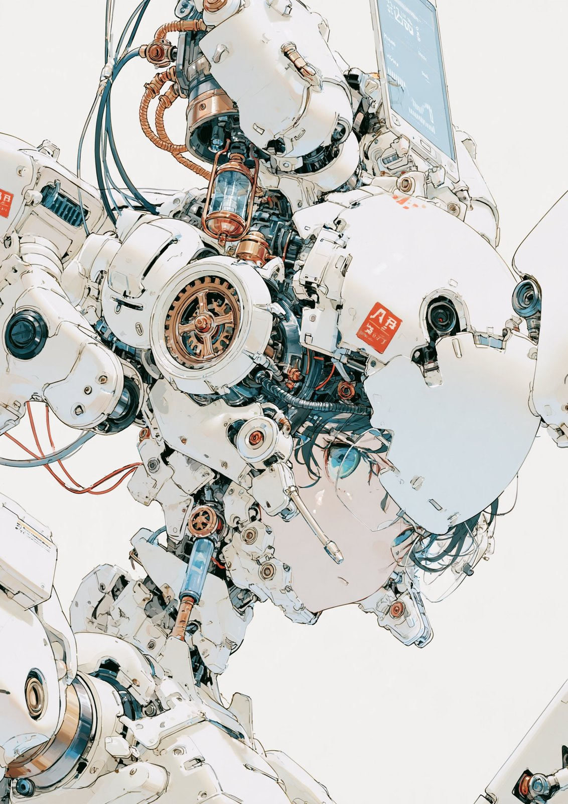
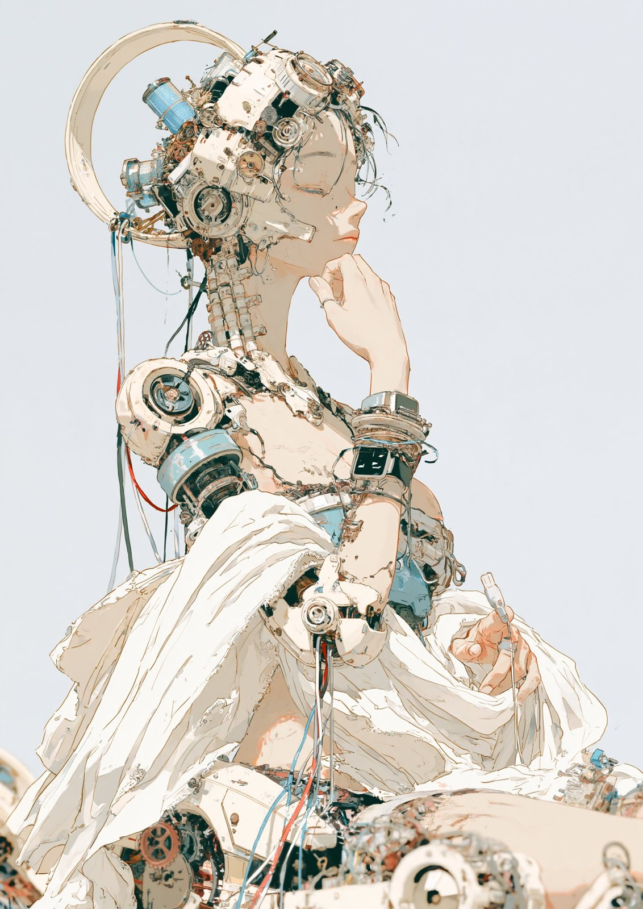

White Mecha Girl
A white-haired cat-eared girl with mechanical accessories and a red flower, rendered in clean lines with pale colors and red accents.
| Creator | keshi @keshiAIart |
|---|---|
| Platform | X |
| Model | Midjourney v8.2 |
| Likes | 473 |
| Posted | 2026-10-07 |
| Visual style | Anime |
| Regional vibe | Japanese |
| Genre | Fantasy / myth Fashion / beauty |
| Mood | Heartwarming |
The creator has not published the prompt.